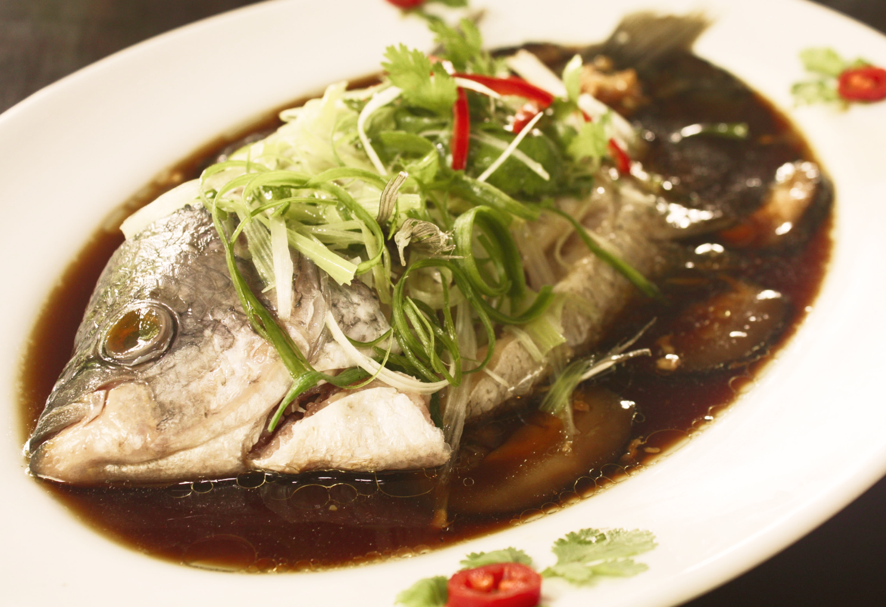
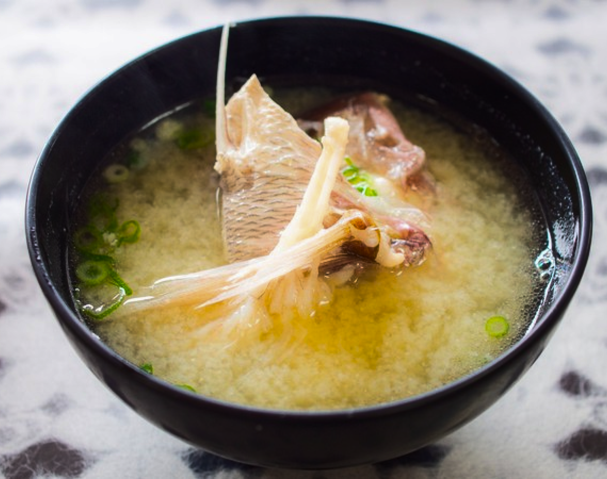
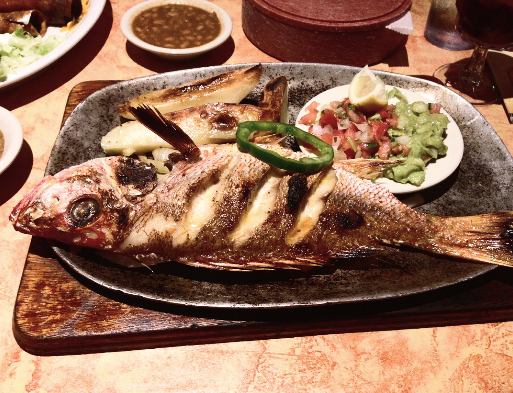
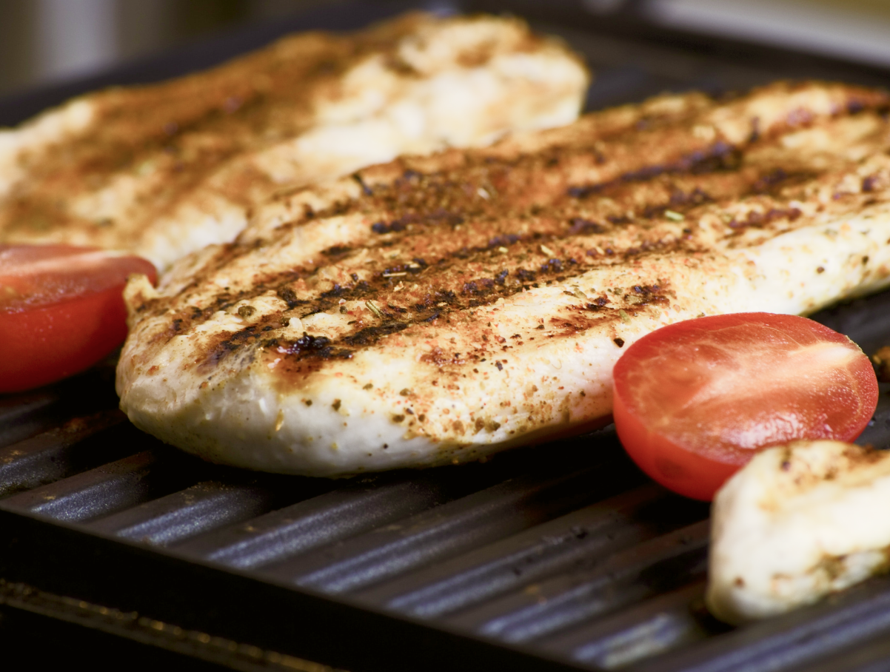

料理
食譜
食譜
建議烹調方式
「以木巽火，烹任也」

蒸
清蒸是最能夠
吃出「原味」的烹調方式
吃出「原味」的烹調方式

煮
煮魚湯的關鍵
在於「喝到鮮魚的鮮甜味」
在於「喝到鮮魚的鮮甜味」

煎
魚肉纖維不過於軟嫩的魚類
最適合乾煎
最適合乾煎

烤
日式的鹽烤適合當下酒菜
紙包魚烤法讓人食指大動
紙包魚烤法讓人食指大動
煮 食譜
麻油鱸魚湯
豆漿魚湯
味噌魚湯
麻油鱸魚湯
麻油鱸魚湯
麻油鱸魚湯
鱸魚先煎香，再用小火爆香老姜
倒入酒水與蛤蜊，撒上葱花，就能喝到暖呼呼的魚湯。
材料和作法都超級無敵簡單
今天就快煮一鍋來幫全家人暖暖胃吧!
材料(四人份)
- 鱸魚 一條
- 老薑 15g
- 蛤蜊 200g
- 米酒 100cc
- 芥花油 一大匙
- 黑麻油 一大匙
- 水 800cc
- 鹽 適量
製作方式
- 1.鍋內倒入1大匙的芥花油，開中小火將魚片煎至上色後取出
- 2.原鍋放入老薑片及1.5大匙的麻油以小火爆香
- 3.再放入步驟2的魚片略輕輕拌炒
- 4.倒入米酒爆出香氣，再倒入水以中火煮沸
- 5.放入蛤蜊以中大火煮至殼打開
- 6.淋上0.5大匙的麻油，撒上葱花關火就完成囉
麻油鱸魚湯
鱸魚先煎香，再用小火爆香老姜
倒入酒水與蛤蜊，撒上葱花，就能喝到暖呼呼的魚湯。
材料和作法都超級無敵簡單
今天就快煮一鍋來幫全家人暖暖胃吧!
材料(四人份)
- 鱸魚 一條
- 老薑 15g
- 蛤蜊 200g
- 米酒 100cc
- 芥花油 一大匙
- 黑麻油 一大匙
- 水 800cc
- 鹽 適量
製作方式
- 1.鍋內倒入1大匙的芥花油，開中小火將魚片煎至上色後取出
- 2.原鍋放入老薑片及1.5大匙的麻油以小火爆香
- 3.再放入步驟2的魚片略輕輕拌炒
- 4.倒入米酒爆出香氣，再倒入水以中火煮沸
- 5.放入蛤蜊以中大火煮至殼打開
- 6.淋上0.5大匙的麻油，撒上葱花關火就完成囉